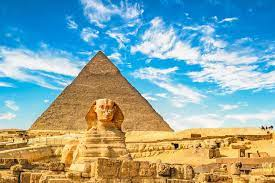
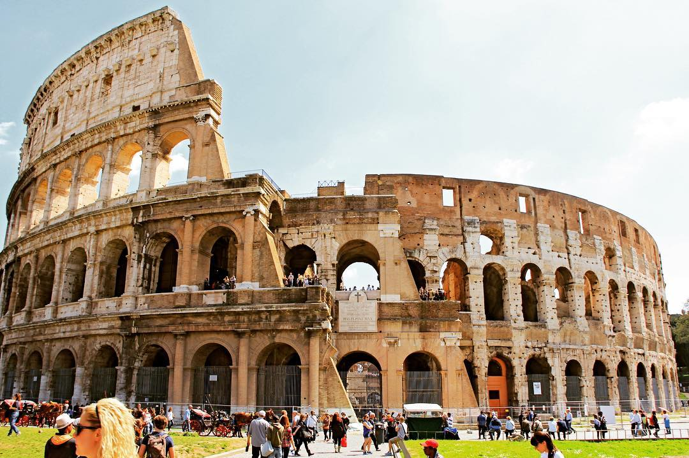

just travel
Egypt
 Egypt, officially the Arab Republic of Egypt, is one of the greatest, most interesting countries you will ever see. With all of its history, culture, culinary, religion, and versatile geography, Egypt has a special spot for everyone who gets to visit this magnificent place. Egyptian history is infinite and is one of the greatest inheritance from human civilization but Egypt is much more than just its thousands of years old Pyramids and monuments, Egypt is life itself and sure is a place that every human who can should once in their lifetime come visit. Major tourist destinations include the millennia-old monuments in the Nile Valley. Principal among them are the Pyramids and Great Sphinx at Giza, the Abu Simbel temples south of Aswan and the Karnak Temple Complex and Valley of the Kings near Luxor. Attractions in Cairo include the Cairo Museum and the Mosque of Muhammad Ali Pasha. The coast of the Sinai Peninsula has well-visited seaside resorts, in addition to Hurghada city on the Red Sea coast and the Famous El Gouna Resort 25 km Hurghada
italy
 Italy is home to the greatest number of UNESCO World Heritage Sites in the world. High art and monuments are to be found everywhere around the country. Its great cities of art, like Rome, Venice and Florence are world famous and have been attracting visitors for centuries. Besides its art treasures Italy also features beautiful coasts, alpine lakes and mountains. No wonder it is often nicknamed the Bel Paese (beautiful country). With so many amazing sights, putting together a compilation of top tourist attractions in Italy is no easy task. The following list however should give a good indication of why over 40 million foreign tourists visit Italy ever year.
USA
The US is home to some of the most spectacular scenery in the world and some of the most recognizable icons on the planet. Many of the top attractions in the United States are bucket list destinations, drawing visitors from around the world. Compiling a list of places to see is step one. But keep in mind, given the size of the United States, most people plan their trips to a specific region, be it the East Coast, the Southwest, the beaches of Florida or California, or outlying regions like Hawaii and Alaska. You may want to see the city sights, or head out to the parks and natural areas. In some cases, you can easily combine the two if you plan a day trip or two. Plenty of options await you, with incredible sights sprinkled across the country. For anyone in the enviable position of having unlimited time and resources, these are the top attractions to include on your itinerary.
France
 From the boulevards of Paris to the fashionable seaside resorts of the Côte d'Azur, France offers some of the most beautiful scenery in the world. Fairy-tale castles, glorious cathedrals, and picture-perfect villages delight romantics. At the same time, the country's contemporary monuments and rapid train transit jolt visitors from the storybook surroundings into the ambience of the 21st century.
Begin with the Eiffel Tower, the modern emblem of France. Then discover famous masterpieces of art at the Louvre Museum. Spend a day pretending to be royalty at the elegant Palace of Versailles. Save time for leisurely gourmet meals - traditional French gastronomy has been inscribed on the UNESCO list of Intangible Cultural Heritage.
Each region has its own distinctive cuisine and culture. The coastal region of Brittany offers the old-world charm of quaint fishing villages and ancient seaports, while the French Alps reveals the region's hearty cuisine of cheese fondue and charcuterie served in cozy chalets near ski slopes. Indulge in it all and savor the country's irresistible charm with our list of the top attractions in France.
From the boulevards of Paris to the fashionable seaside resorts of the Côte d'Azur, France offers some of the most beautiful scenery in the world. Fairy-tale castles, glorious cathedrals, and picture-perfect villages delight romantics. At the same time, the country's contemporary monuments and rapid train transit jolt visitors from the storybook surroundings into the ambience of the 21st century.
Begin with the Eiffel Tower, the modern emblem of France. Then discover famous masterpieces of art at the Louvre Museum. Spend a day pretending to be royalty at the elegant Palace of Versailles. Save time for leisurely gourmet meals - traditional French gastronomy has been inscribed on the UNESCO list of Intangible Cultural Heritage.
Each region has its own distinctive cuisine and culture. The coastal region of Brittany offers the old-world charm of quaint fishing villages and ancient seaports, while the French Alps reveals the region's hearty cuisine of cheese fondue and charcuterie served in cozy chalets near ski slopes. Indulge in it all and savor the country's irresistible charm with our list of the top attractions in France.